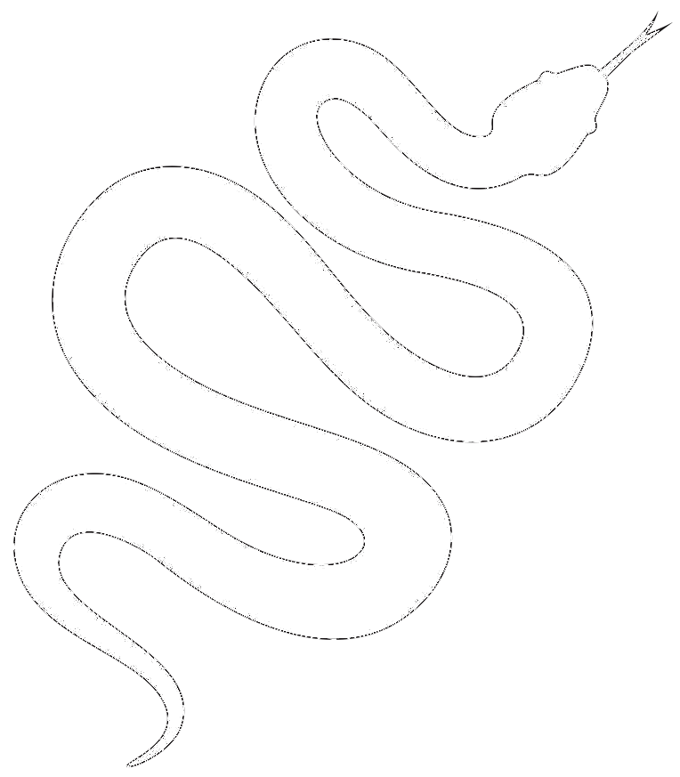

Informatique commune en 1ère année en CPGE
TP ensembles
GitHub
Colab
DS
Python
TPs 1er semestre
Analyse d'algorithmes
Représentation des nombres
Graphes : Définitions
Parcours de graphe
Plus courts chemins
2ème année
Informatique commune en 1ère année en CPGE
GitHub
Colab
DS
DS
DS 1 corrigé
DS 2
Corrigé DS 2
Corrigé DS 3
DS 4
DS 4 Corrigé : Coloriage de graphe
Python
Python
Prise en main de Jupyter
Variables et types
Fonctions
Condition if
Boucles
Cours résumé de Python
Fiche de résumé Python
TPs 1er semestre
TPs 1er semestre
TP 1 : Dictionnaire et recherche séquentielle
TP 2 : Boucles imbriquées
TP 3 : Modules et packages en Python
TP 4 : Recherche par dichotomie
TP 5 : Récursivité
TP 6 : Dessin de fractales
TP 7 : Algorithmes gloutons
TP 8 : Matrices et images
TP 9 : Algorithmes de tri
TP 10 : Jeu du Mastermind
TP 11 : Jeu du Puissance 4
Études statistiques sur Parcoursup
Analyse d'algorithmes
Analyse d'algorithmes
Complexité
Complexité
Cours
TP 1 : tranche minimum
TP 2 : Complexité de la dichotomie et d'algorithmes de tri
Preuve de programme
Preuve de programme
Cours
Représentation des nombres
Représentation des nombres
Représentation des entiers
TP représentation des entiers
Représentation des flottants
TP représentation des flottants
Graphes : Définitions
Graphes : Définitions
Définitions sur les graphes
Définitions sur les graphes
Cours
TP : Graphe de Facebook
Représentations
Représentations
Cours
TP : Représentation par matrice d'adjacence
TP : Algorithme PageRank de Google
Parcours de graphe
Parcours de graphe
Parcours en profondeur
Parcours en profondeur
Cours
Code : Parcours en profondeur
Code : Génération et résolution de labyrinthe
TP : Parcours en profondeur
Parcours en largeur
Parcours en largeur
Cours
Code : Parcours en largeur
TP : Parcours en largeur
Exercices DFS et BFS
Plus courts chemins
Plus courts chemins
Algorithme de Dijkstra
Algorithme de Dijkstra
Cours : Algorithme de Dijkstra
Code : Algorithme de Dijkstra
TP : Algorithme de Dijkstra
TP : Plus court chemin sur un graphe de OpenStreetMap
Algorithme A*
Algorithme A*
Cours : Algorithme A*
Code : A*
2ème année
Back to top